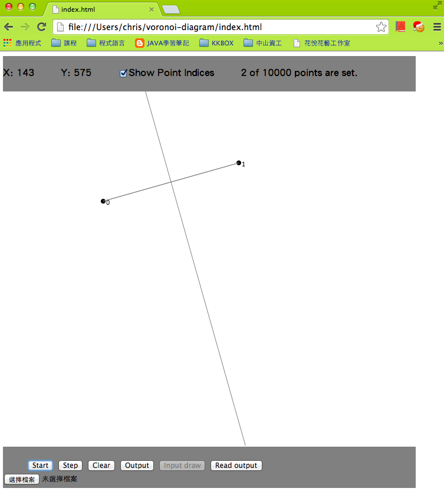
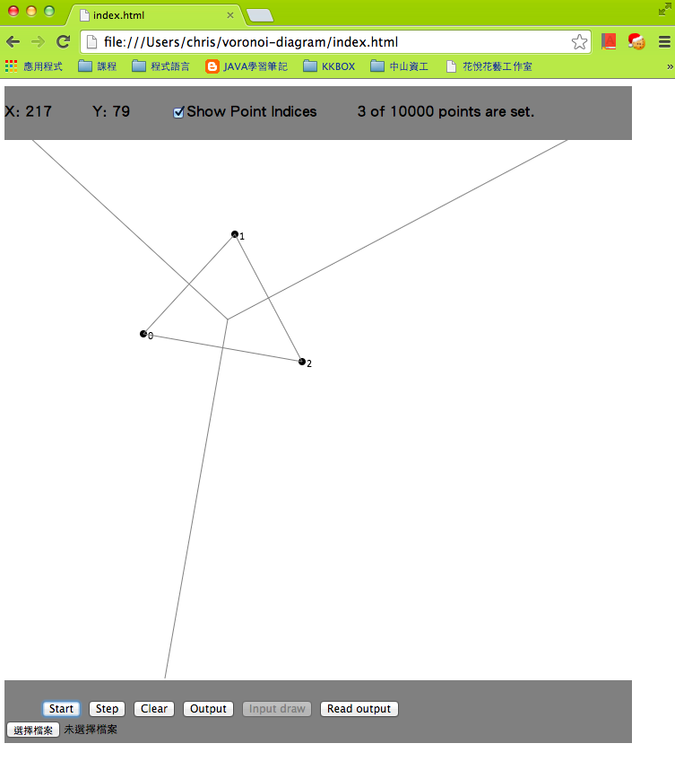
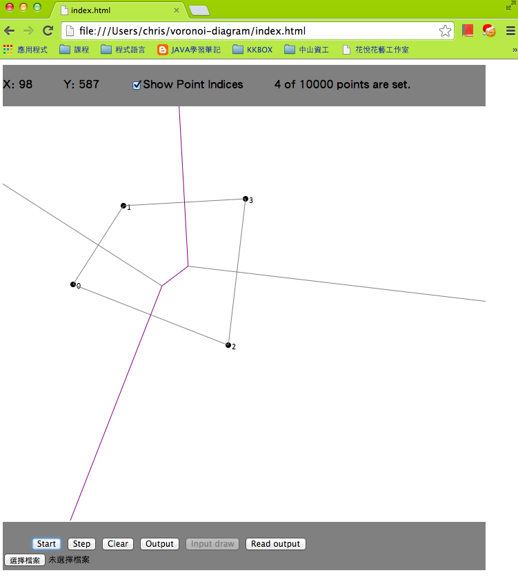
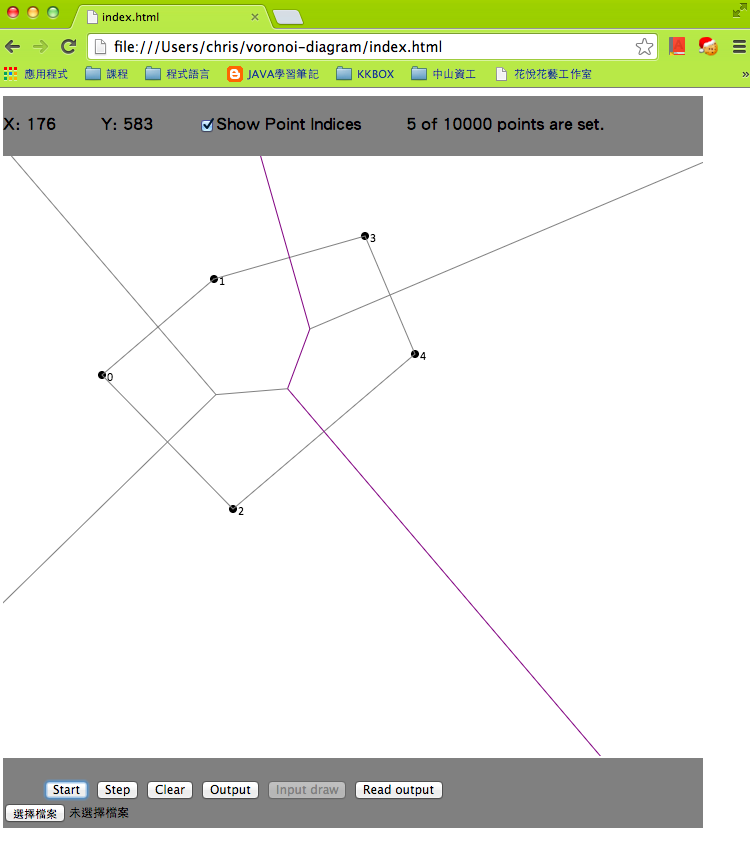
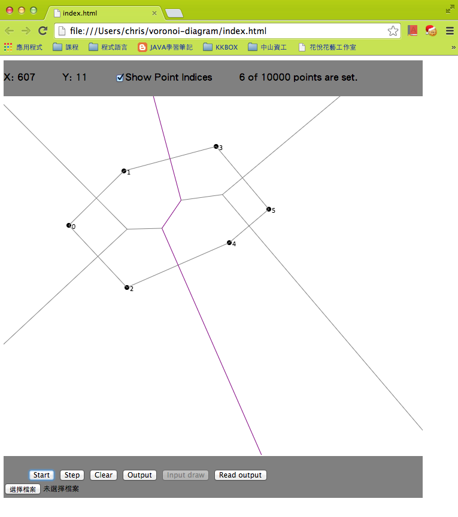

軟體規格書
軟體說明
程式設計
軟體測試與實驗結果
結論與心得
附錄
實驗環境
程式語言: Javascript
直譯器版本: 依各家瀏覽器而異，在此使用 Google V8 Javascript Engine
作業系統: 各種發行版皆相容，在此使用 Mac OS X 10.9 Mavericks
測試數據(最多完成6點)
2點 Voronoi Diagram

3點 Voronoi Diagram

4點 Voronoi Diagram

5點 Voronoi Diagram

6點 Voronoi Diagram
